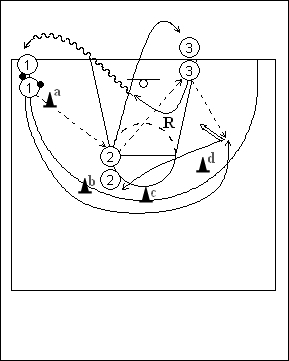

Catégorie : SHOOTS (Sh-50000)
Déroulement
- Trois files de joueurs. Une file avec ballons dans un coin proche de la baseline; une file à l’elbow (ligne des lancers-francs) du même côté; une file à la baseline comme indiqué.
- Le premier joueur de la file 1 passe au premier joueur de la file 2 et sprinte autour des cônes a, b, c et d. Le premier joueur de la file 2 passe au premier joueur de la file 3, qui transmet aussitôt au premier joueur de la file 1 qui shoote.
- Le joueur 3 réalise le rebond et va en dribble derrière la file 1. Après son shoot, 1 va dans la file 2 à la ligne des lancers-francs, tandis que 2 va dans la file 3 à la baseline.
Coaching points
- Exiger un sprint du joueur 1, qui doit recevoir le ballon exactement au moment où il apparaît derrière le cône d.
- On peut demander au joueur 3 de venir lever les bras en défense sur 1 avant de jouer le rebond.